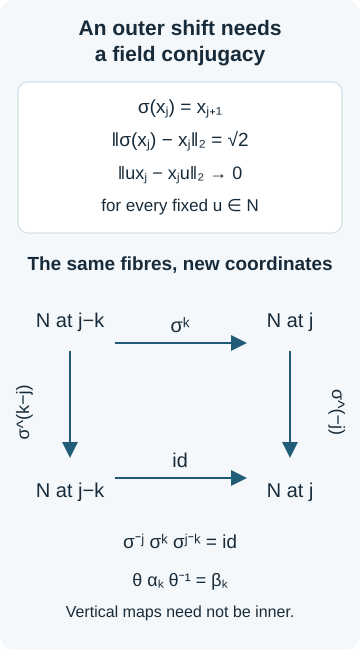

Measured amenability and finite approximation
An invariant mean on a countable measured equivalence relation produces finite pieces with small boundary. Packing these pieces and taking intersections of tails gives an increasing exhaustion by finite relations. For a free amenable action, compatible matrix units then give finite-dimensional approximations to the entire crossed product, including in the nonsingular case.
We work with a standard sigma-finite measure space \((X,\mu)\) and a countable Borel equivalence relation \(R\), modulo an invariant null set. All transformations are nonsingular. An arrow \((y,x)\) has range \(y\) and source \(x\). The countable presentation and null-set conventions are proved in GMB02. The earlier measured-mean lesson, Propositions 1.1–2.2, Lemmas 3.1–5.1 and Theorem 6.1 supplies the standard-Borel and functional-analytic inputs used below. We give the boundary construction explicitly.
The stronger constant-size approximation uses nonsingular arrays, Lemma 5.1 and Theorem 5.2, whose proof includes finite-relation balancing and exact preservation of the old array maps. The action applications also use free centres and isotropy, Proposition 1.1 and Theorems 2.3–4.1 and the exact programme inputs named in the relevant sections.
Means and the two counting measures
Define the source and range counting measures by
\[ \begin{aligned} \int_R f\,d\nu_s&=\int_X\sum_{y\sim x}f(y,x)\,d\mu(x),\\ \int_R f\,d\nu_r&=\int_X\sum_{x\sim y}f(y,x)\,d\mu(y). \end{aligned} \tag{MGH.1} \]They are equivalent precisely because saturation of a null unit set is null. They are sigma-finite by a countable decomposition into partial graphs. Write
\[ \delta(y,x)=\frac{d\nu_r}{d\nu_s}(y,x). \]On one invariant conull set, \(\delta>0\) and
\[ \delta(z,y)\delta(y,x)=\delta(z,x). \tag{MGH.2} \]For a partial nonsingular bijection \(\theta:D\to E\), let
\[ j_\theta=\frac{d(\theta_*(\mu|_D))}{d(\mu|_E)}. \]Then
\[ \delta(\theta x,x)=j_\theta(\theta x)^{-1}. \tag{MGH.3} \]These identities follow by applying change of variables to each partial graph and then to its compositions; the countable presentation permits a single exceptional null set to be discarded.
For \(f\in L^\infty(R,\nu_r)\), define
\[ (\lambda_\theta f)(y,x) =\mathbf1_E(y)f(\theta^{-1}y,x). \tag{MGH.4} \]On unit functions the same notation means \(\lambda_\theta g=\mathbf1_E(g\circ\theta^{-1})\). An invariant mean is a positive linear map
\[ P:L^\infty(R,\nu_r)\longrightarrow L^\infty(X,\mu) \]such that
\[ \begin{aligned} P1&=1,\\ P(f(g\circ r))&=(Pf)g,\\ P\lambda_\theta&=\lambda_\theta P \end{aligned} \tag{MGH.5} \]for every partial transformation of \(R\). It has norm one and is onto, since \(P(g\circ r)=g\). Normality is not part of the definition. The relation is amenable when such a map exists.
The definition depends only on the measure class. If \(\mu'=w\mu\), with \(0<w<\infty\) almost everywhere, then
\[ d\nu'_s=(w\circ s)d\nu_s,\qquad d\nu'_r=(w\circ r)d\nu_r,\qquad \delta'(y,x)=\frac{w(y)}{w(x)}\delta(y,x). \tag{MGH.6} \]The measurable function spaces, module identities and null sets are unchanged. A sigma-finite space can therefore be replaced by an equivalent probability space: partition it into finite-measure sets \(C_n\), put \(w_0=2^{-n}/(1+\mu(C_n))\) on \(C_n\), and normalize its integral. We use this reduction for the approximation proofs.
Amenable groups give amenable relations. Let a countable amenable group \(\Gamma\) act nonsingularly. The discrete Reiter theorem in AMH03 gives finitely supported probabilities \(q_n\) such that
\[ \sum_h|q_n(hg)-q_n(h)|\longrightarrow0 \quad(g\in\Gamma). \]Inverting a left Reiter sequence gives this right-handed convention. Put
\[ Q_nf(y)=\sum_hq_n(h)f(y,hy). \tag{MGH.7} \]A \(\nu_r\)-null function vanishes at every point in almost every range fibre, so (MGH.7) is well-defined even when the action is not free. Each \(Q_n\) is positive, unital and a range-module map. Direct substitution gives
\[ \|Q_n\lambda_gf-\lambda_gQ_nf\|_\infty \leq\|f\|_\infty\sum_h|q_n(hg)-q_n(h)|. \]Take a subnet converging weak-star for every \(f\), in the product of the appropriate weak-star compact balls of \(L^\infty(X)\). Its limit satisfies (MGH.5) for group transformations. An arbitrary partial transformation is a countable union of restrictions of group transformations. Localize on each of their disjoint range pieces by the module identity to obtain (MGH.5) there, hence everywhere. No interchange of \(P\) with an infinite sum is needed.
Finite exhaustions give means. Suppose \(R=\bigcup_nR_n\), where \(R_n\) are increasing Borel relations with finite classes. Average \(f(y,\cdot)\) uniformly over \([y]_{R_n}\). For a fixed partial \(\theta\), this average commutes with \(\lambda_\theta\) wherever \((y,\theta^{-1}y)\in R_n\). The exceptional indicators decrease to zero, and the errors are bounded by \(2\|f\|_\infty\). Integration against any \(L^1\) function proves weak-star convergence of the errors to zero. A product weak-star cluster point is an invariant mean.
The definition also makes sense for a countable measured groupoid with isotropy: replace the change of first coordinate in (MGH.4) by left multiplication by the inverse bisection arrow. For a one-unit discrete group it is the ordinary invariant-mean definition. The equivalence with finite equivalence relations below concerns principal groupoids; it is not a statement about arbitrary isotropy.
Bounded graphs and separated columns
Call \(K\subset R\) bounded if both its source and range fibres have a common finite cardinality bound and \(|\log\delta|\) is bounded on \(K\).
Bounded decomposition. There are increasing bounded sets \(K_n\) exhausting \(R\). Each bounded set is a finite union of graphs of partial nonsingular bijections whose Radon–Nikodym derivatives and their inverses are bounded.
To construct the exhaustion, enumerate the partial graphs from GMB02, take the first \(n\) together with their inverses and the diagonal, and cut down to \(1/n\leq\delta\leq n\). These sets are bounded, inverse-symmetric and increasing. For the second assertion, fix a Borel injection \(X\to[0,1]\). Order each finite source fibre using this injection and split \(K\) into its first, second, and subsequent entries. Each resulting partial function has uniformly finite fibres; order each such fibre and split once more. The resulting finitely many maps are injective. The finite Borel selection and Borel-image assertions are those proved in GMB02 and in the measured-mean lesson's Lemma 3.1. Equation (MGH.3) gives the derivative bounds.
Separated-column lemma. If \(L\subset R\) has uniformly finite source and range fibres and \(A\subset X\) has positive measure, there is a positive-measure \(B\subset A\) such that
\[ L_x\cap L_{x'}=\varnothing \quad(x,x'\in B,\ x\ne x'),\qquad L_x=\{y:(y,x)\in L\}. \tag{MGH.8} \]No bound on \(\delta\) is required here.
Write \(L\) as finitely many partial bijections \(\alpha_i\), by the preceding selection argument. A collision \(\alpha_i x=\alpha_jx'\) is a nonfixed arrow of \(\alpha_j^{-1}\alpha_i\). For a partial injective transformation \(T\) and a positive set \(A'\), choose a positive subset on which \(T\) is undefined, is fixed, or has no arrow between distinct points of that subset. The last choice is possible as follows. A countable family of Borel sets separates points. For every nonfixed \(x\) in the domain, one of these sets contains exactly one of \(x,Tx\). One orientation and one separating set therefore captures a positive subset \(C\), and \(TC\cap C=\varnothing\). Apply this selection successively to the finitely many \(\alpha_j^{-1}\alpha_i\), retaining positive measure at each step. In the final subset no nonfixed collision survives, proving (MGH.8).
We will apply this lemma to an enlarged set that includes both a tile's support and its possible boundary predecessors. Separating just the support columns would not prevent an edge from joining two different tiles.
From a mean to a finite patch
Assume now that \(\mu(X)=1\) and \(R\) has an invariant mean. If \(A\subset X\) is positive, the reduced relation \(R|_A\), with normalized restricted measure, also has a mean. Indeed choose, measurably on \([A]_R\), a related point \(\pi(x)\in A\), taking the first available graph in the countable presentation. Lift a function on \(R|_A\) to \(f(y,\pi(x))\) when \(y\in A\), and to zero otherwise. Range counting makes the lift well-defined on null classes. Its image under \(P\), restricted to \(A\), has all the identities (MGH.5); changing the first coordinate commutes with this lift. This proves the reduction assertion.
We prove a finite-patch estimate in source counting first. Let \(K\) be bounded and \(\eta>0\). There are a positive unit set \(Y\) and a finite Borel equivalence relation \(S\) on \(Y\), with uniformly bounded class size, such that
\[ \nu_s\bigl((K\cap\operatorname{Inc}(Y))\setminus S\bigr) <\eta\mu(Y), \quad \operatorname{Inc}(Y)=s^{-1}Y\cup r^{-1}Y. \tag{MGH.9} \]The same assertion holds inside any positive reduction.
Write \(K=\bigcup_{i=1}^m\operatorname{graph}(\theta_i)\), with \(\theta_i:D_i\to E_i\). Put \(\rho(f)=\int Pf\,d\mu\), a state on \(L^\infty(R,\nu_r)\). The bounded operators
\[ B_if(y,x)=\mathbf1_{E_i}(y)j_i(y) f(\theta_i^{-1}y,x) \]satisfy
\[ \rho(B_if)=\rho((\mathbf1_{D_i}\circ r)f). \tag{MGH.10} \]This follows from (MGH.5) and change of variables on \(X\), including the factor \(j_i\).
Positive \(L^1(\nu_r)\) densities of integral one are weak-star dense among all states. To see this, a separating weak-star continuous functional would be evaluation at a bounded self-adjoint function \(f\). The supremum of its integrals over normal states is its essential supremum, which bounds its value at every state, a contradiction. Map these densities to the finite list of predual defects for (MGH.10). Zero is in their weak closure; convexity and Hahn–Banach put it in their norm closure. Thus one can choose a positive probability density \(h\) such that
\[ \sum_i\int_{D_i}\sum_{x\sim y} |h(\theta_i y,x)-h(y,x)|\,d\mu(y)<\eta. \tag{MGH.11} \]The formula is the predual change-of-variables identity for \(B_i\). Start with a strict margin, then truncate \(h\) to a bounded set \(K'\) and renormalize it. The operators involved are bounded, so the same strict inequality can be retained. We henceforth assume \(h\) is supported in \(K'\).
For \(a>0\), let \(F_x(a)=\{y:h(y,x)>a\}\), a uniformly finite set, and put
\[ \begin{aligned} w_a(x)&=\sum_{y\in F_x(a)}\delta(y,x),\\ \beta_a(x)&=\sum_i\sum_{y\in D_i,\ y\sim x} \delta(y,x)\, |\mathbf1_{F_x(a)}(\theta_i y)-\mathbf1_{F_x(a)}(y)|. \end{aligned} \tag{MGH.12} \]The elementary identity
\[ |u-v|=\int_0^\infty |\mathbf1_{\{u>a\}}-\mathbf1_{\{v>a\}}|\,da \quad(u,v\geq0) \]and (MGH.1) give
\[ \int_0^\infty\!\int_Xw_a\,d\mu\,da=1,\qquad \int_0^\infty\!\int_X\beta_a\,d\mu\,da<\eta. \]Consequently, for some \(a\), the Borel set \(\{x:0<w_a(x),\ \beta_a(x)<\eta w_a(x)\}\) has positive measure.
Apply (MGH.8) on this set to
\[ L=K'\ \cup\ \bigcup_i\{(y,x):y\in D_i,\ (\theta_i y,x)\in K'\}. \tag{MGH.13} \]Both fibre degrees of \(L\) are finite: each added piece is obtained by an injective change of the first coordinate of \(K'\). Let \(B\) be the resulting positive set and abbreviate \(F_x=F_x(a)\). The \(F_x\), \(x\in B\), are nonempty disjoint finite sets. Set
\[ Y=\bigcup_{x\in B}F_x,\qquad S=\bigcup_{x\in B}(F_x\times F_x). \tag{MGH.14} \]Finite Borel selection and the injective projection from disjoint columns show that these are Borel; \(S\) is a finite relation. Change of variables along the finitely many partial graphs gives
\[ \mu(Y)=\int_Bw_a(x)\,d\mu(x)>0. \tag{MGH.15} \]For a fixed \(i\), the boundary-source sets
\[ C_{i,x}=\{y\in D_i: \mathbf1_{F_x}(\theta_i y)\ne\mathbf1_{F_x}(y)\} \]lie in the disjoint \(L_x\). Hence, for \(C_i=\bigcup_{x\in B}C_{i,x}\),
\[ \sum_i\mu(C_i)=\int_B\beta_a(x)\,d\mu(x) <\eta\mu(Y). \tag{MGH.16} \]An edge \((\theta_i y,y)\) touching \(Y\) but outside \(S\) has \(y\in C_i\). Indeed an edge joining \(F_x\) to a distinct \(F_{x'}\) would put its source in both \(L_x\) and \(L_{x'}\), contrary to (MGH.8). Charging an edge by its source therefore proves (MGH.9).
Apply the argument to \(K\cup K^{-1}\). Inversion exchanges \(\nu_s\) and \(\nu_r\), and preserves both \(\operatorname{Inc}(Y)\) and \(S\). Thus the same patch satisfies (MGH.9) for both counting measures. This final symmetrization is essential: a source-measure estimate alone is not a range-measure estimate.
Increasing finite approximations
All-space approximation. For a bounded \(K\) and \(\varepsilon>0\), there is a finite Borel relation \(S\) on all of \(X\), with a uniform class-size bound, such that
\[ \nu_s(K\setminus S)<\varepsilon,\qquad \nu_r(K\setminus S)<\varepsilon. \tag{MGH.17} \]Here is a complete packing argument. First work in source counting with \(0<\eta<\varepsilon\). Let \(A_1=X\). Among the patches satisfying (MGH.9) inside \(R|_{A_n}\) for \(K|_{A_n}\), let \(a_n\) be the supremum of their unit masses. Choose one on \(Y_n\subset A_n\) with \(\mu(Y_n)>a_n/2\), and put \(A_{n+1}=A_n\setminus Y_n\). Stop if the remaining set is null. If \(K|_{A_n}\) is null, the singleton relation on all of \(A_n\) is admissible. Otherwise MGH03 provides a positive patch.
The residual \(A_\infty=\bigcap_n A_n\) is null. If it were positive, MGH03 would give a fixed positive patch \(S_*\) on \(Y_*\subset A_\infty\) with error \(<(\eta/2)\mu(Y_*)\) for \(K|_{A_\infty}\). Since \(\nu_s(K)<\infty\), the boundary errors of this fixed patch for \(K|_{A_n}\) decrease to its error for \(K|_{A_\infty}\). It is eventually admissible with tolerance \(\eta\). Thus eventually \(a_n\geq\mu(Y_*)\), forcing infinitely many disjoint \(Y_n\) of mass \(>\mu(Y_*)/2\), an impossibility.
Take the union of the chosen patch relations, with singletons on the null residual. An edge outside this relation is charged to the first patch meeting either endpoint; at that step both endpoints lie in \(A_n\), and its cost is bounded by the patch estimate. Summing gives total error at most \(\eta\). The union has finite classes, possibly without a uniform bound. Replace classes larger than \(M\) by singletons. Their unit sets decrease to the empty set as \(M\to\infty\); the extra error inside the finite-measure set \(K\) tends to zero. Choose \(M\) large enough to obtain the source half of (MGH.17). Apply this construction to \(K\cup K^{-1}\) to obtain both halves.
Amenability and hyperfiniteness. A countable nonsingular relation is amenable if and only if, on an invariant conull unit set, it is an increasing union of finite Borel relations.
Only the forward direction remains after MGH01. Choose the bounded exhaustion \(K_n\) of MGH02 and finite all-space relations \(S_n\) with \(\nu_s(K_n\setminus S_n)<2^{-n}\). Define
\[ T_n=\bigcap_{k\geq n}S_k. \tag{MGH.18} \]These are increasing finite Borel equivalence relations; \(T_n\subset S_n\). For \(n\geq m\),
\[ \nu_s(K_m\setminus T_n) \leq\sum_{k\geq n}\nu_s(K_k\setminus S_k) <2^{1-n}. \tag{MGH.19} \]Thus almost every arrow lies in \(\bigcup_nT_n\). For each graph in a countable presentation, remove the null set of source points of missing arrows, and then its saturation. Nonsingularity makes the resulting invariant exceptional unit set null. On its complement every arrow belongs to some \(T_n\). Taking joins of arbitrary finite relations would not work: their joins can have infinite classes. Intersections of tails avoid that problem.
The constant-size AF convention. Suppose in addition that \(R\) is ergodic. The stronger convention in Definition XIII.3.11 asks for increasing finite relations whose classes all have one fixed size at each stage, on increasing unit sets exhausting \(X\). It is equivalent here to the finite-class condition just proved.
If \(\mu\) is nonatomic, the earlier nonsingular-array Theorem 5.2 provides full-unit dyadic arrays with class sizes \(2^k\), compatible transport maps and union \(R\) on an invariant conull set. Its proof uses the complete balancing argument of its Theorem 4.1 and the exact refinement of Lemma 5.1: reduce finitely many prescribed maps to the old base, balance a finite local approximation there, and transport the refinement through every old cell. Absolute continuity controls each of these finitely many transported measures. The refinement preserves old transports exactly; a summable sequence of errors captures every presentation graph. Interpolating the omitted dyadic levels gives each size \(2^k\). These are precisely the earlier programme proofs required for this stronger conclusion.
If \(\mu\) has an atom, standardness gives a positive point atom; its countable saturation is conull by ergodicity. Thus \(R\) has a single conull countable orbit, every point of positive mass. For a finite orbit take the whole relation. For an infinite orbit enumerate its points \(x_1,x_2,\ldots\), let \(Y_n=\{x_1,\ldots,x_n\}\), and take \(Y_n\times Y_n\). Every stage has class size \(n\), and the stages exhaust the orbit. Conversely, extend any increasing partial-unit constant-size exhaustion by singleton classes outside its unit sets. This gives an increasing finite-class exhaustion, hence a mean by MGH01. This proves the full ergodic principal-groupoid assertion, including its atomic and sigma-finite cases.
Finite-dimensional crossed-product approximation
Let a countable amenable group \(\Gamma\) act freely, ergodically and nonsingularly on a standard nonatomic space. Write \(A=L^\infty(X,\mu)\). Then
\[ A\rtimes\Gamma=\Bigl(\bigcup_nD_n\Bigr)'' \tag{MGH.20} \]for an increasing sequence of finite-dimensional unital star algebras \(D_n\).
By MGH01 and MGH04 the orbit relation admits the compatible arrays just described. Include a countable generating family of Borel sets in the approximation requirements of the array theorem. Pass to levels of orders \(q_n=2^{m_n}\) at which the first \(n\) such sets are approximated in measure with error \(2^{-n}\).
First identify the crossed product explicitly. Its regular representation is on \(\ell^2(\Gamma)\otimes L^2(X,\mu)\), with
\[ \begin{aligned} (\pi(f)\xi)(g,x)&=f(T_gx)\xi(g,x),\\ (\lambda_h\xi)(g,x)&=\xi(h^{-1}g,x). \end{aligned} \tag{MGH.21} \]Freeness makes
\[ (J_0\xi)(T_gx,x)=\xi(g,x) \tag{MGH.22} \]a unitary onto \(L^2(R,\nu_s)\). There is no Radon–Nikodym factor here: the source \(x\) is unchanged and each orbit point has a unique group label. Diagonal operators become multiplication by \(f(y)\); the group unitaries become permutation of the range coordinate.
An array of order \(q_n\) consists of disjoint cells \(Z_a^{(n)}\) covering \(X\), with compatible bijections between them identifying each relation class with its \(q_n\) points. Its transport operators \(e_{ab}^{(n)}\) on \(L^2(R,\nu_s)\) are matrix units:
\[ e_{ab}^{(n)}e_{cd}^{(n)} =\mathbf1_{\{b=c\}}e_{ad}^{(n)},\qquad (e_{ab}^{(n)})^*=e_{ba}^{(n)},\qquad \sum_ae_{aa}^{(n)}=1. \tag{MGH.23} \]They belong to the relation algebra: each partial transport is a countable disjoint union of restrictions of group maps, so its operator is the strong sum of the corresponding diagonal restrictions of group unitaries. With the refinement index \(i\), exact compatibility says
\[ e_{ab}^{(n)} =\sum_i e_{(a,i),(b,i)}^{(n+1)}. \tag{MGH.24} \]Thus \(D_n=\operatorname{span}\{e_{ab}^{(n)}\}\cong M_{q_n}(\mathbb C)\) are unital and increasing.
Let \(Q=(\bigcup_nD_n)''\). The cell partitions approximate the chosen Borel generators, so their multiplication projections converge strongly. To justify this for the nonsingular representation, for any \(\xi\in L^2(R,\nu_s)\) define
\[ \kappa_\xi(B)= \int_X\sum_{y\sim x}\mathbf1_B(y)|\xi(y,x)|^2\,d\mu(x). \]This is a finite measure absolutely continuous with respect to \(\mu\): the saturation of a null set is null. Hence convergence in \(\mu\)-measure of bounded indicators gives convergence in \(L^2(\kappa_\xi)\), which is exactly the required strong convergence. The generating projections, their Boolean combinations and bounded monotone limits show that \(Q\) contains every diagonal multiplier.
Let \(R_n\) be the array relations, and set
\[ B_{g,n}=\{x:(T_gx,x)\in R_n\}. \]These sets increase to \(X\) modulo null sets. Restricted to \(B_{g,n}\), the graph of \(T_g\) is a finite union of restrictions of the \(n\)-th array maps. Therefore its partial transport is a finite sum of matrix units multiplied by diagonal projections, and belongs to \(Q\). These partial transports converge strongly to the full group unitary, by the same finite-measure argument for vectors. Consequently \(Q\) contains every generator of the crossed product, proving (MGH.20) after transport by \(J_0\).
No invariant probability measure, equal cell masses or trace was used. In particular, this proof retains the nonsingular type III scope of Exercise XIII.4.2. The earlier array Corollary 5.3 and free-centre Theorem 4.1 give the same exact compatible-matrix-unit input and generator argument.
Faithfulness, freeness and the first exercise
For a separable factor \(N\), write an action on \(L^\infty(X)\,\bar\otimes\,N\) as
\[ (\alpha_gm)(y)=D_g(y)m(T_g^{-1}y),\qquad D_{gh}(y)=D_g(y)D_h(T_g^{-1}y). \tag{MGH.25} \]A homomorphism on the principal orbit relation would have to assign \(D_g(y)\) to \((y,T_g^{-1}y)\). This is well-defined if and only if stabilizer elements act trivially on the factor fibre. Freeness ensures this condition. Faithfulness of the action on the centre only says that no single nonidentity group element acts trivially almost everywhere; it does not exclude point stabilizers.
Here is an explicit obstruction to both claims in Exercise XIII.4.1 with faithfulness alone. Let \(K=S_4\), \(a=(12)\), \(b=(34)\), and \(H=\{1,a,b,ab\}\). Put
\[ X=\{0,1\}^{\mathbb Z}\times K/H,\qquad \Gamma=\mathbb Z\times K, \]with fair Bernoulli measure times uniform measure on the six cosets. The action is
\[ T_{(n,k)}(y,d)=(S^ny,kd). \tag{MGH.26} \]It is diffuse, amenable, ergodic and faithful. Diffuseness follows from cylinder partitions with largest mass tending to zero. Disjoint coordinate blocks make the Bernoulli shift mixing on cylinder events, and approximation by cylinder events makes it ergodic. Transitivity of \(K\) on its cosets then proves ergodicity of (MGH.26). Nonzero powers of the shift change a coordinate event with positive probability. The core of \(H\) in \(S_4\) is trivial: a normal subgroup containing one of its transpositions would contain all six, and one containing its double transposition would contain all three, whereas \(H\) contains only two and one, respectively. This proves faithfulness. The sets \([-m,m]\times K\) give Følner sets for \(\Gamma\).
In \(N=M_2(\mathbb C)\) take
\[ P=\begin{pmatrix}1&0\\0&-1\end{pmatrix},\qquad Q=\begin{pmatrix}0&1\\1&0\end{pmatrix}. \]Then \(P^2=Q^2=1\), \(PQ=-QP\), and \(\varphi(a^ib^j)=\operatorname{Ad}(P^iQ^j)\) is a homomorphism \(H\to\operatorname{Aut}(N)\). Every automorphism of \(M_2\) is inner: its images of the standard matrix units are matrix units, and choosing compatible orthonormal vectors for their minimal projections gives an implementing unitary.
Choose coset representatives \(r(d)\), with \(r(H)=1\), and put
\[ \kappa(k,d)=r(kd)^{-1}kr(d)\in H. \]The identity \(\kappa(kl,d)=\kappa(k,ld)\kappa(l,d)\) shows that
\[ (\alpha_{(n,k)}m)(y,d) =\varphi(\kappa(k,k^{-1}d)) \bigl(m(S^{-n}y,k^{-1}d)\bigr) \tag{MGH.27} \]is an action. On the positive corner \(e=\mathbf1_{\{0,1\}^{\mathbb Z}\times\{H\}}\), the centre transformations \(a,b\) are the identity, but their factor actions are \(\operatorname{Ad}P,\operatorname{Ad}Q\). Thus the action cannot descend to the principal relation: an identity arrow would receive a nonidentity automorphism.
Even allowing an automorphism \(\theta\) of the whole algebra does not repair the proposed cocycle conclusion. Suppose an \(\alpha\)-cocycle \(u\) satisfied
\[ \theta\alpha_g^u\theta^{-1}=\beta_g, \qquad \beta_g=\text{centre action}\otimes\operatorname{id}_N. \tag{MGH.28} \]Inner perturbation does not change the centre action, so \(\theta|_{L^\infty(X)}\) commutes with every centre transformation. Since \(\beta_a,\beta_b\) fix the centre pointwise on \(e\), they fix it pointwise on \(\theta(e)\). Testing a countable separating family shows that the underlying transformations are the identity there. The product actions \(\beta_a,\beta_b\) are therefore the identity on \(\theta(e)M\). Equation (MGH.28) forces \(\alpha_a^u,\alpha_b^u\) to be the identity on \(eM\).
Consequently on \(eM\) one has \(u_a=\lambda P\), \(u_b=\eta Q\) for scalar unitary functions \(\lambda,\eta\). The centre action of \(a,b\) is trivial there, so
\[ u_a\alpha_a(u_b)=-\lambda\eta PQ,\qquad u_b\alpha_b(u_a)=\lambda\eta PQ. \tag{MGH.29} \]This contradicts \(ab=ba\) and the cocycle identity. The counterexample satisfies even \(\operatorname{Int}(N)=\operatorname{Aut}(N)\), hence also the weaker density hypothesis actually printed in Exercise 1.
Corrected conclusion under freeness. If the centre action is free and ergodic and
\[ \overline{\operatorname{Int}(N)}=\operatorname{Aut}(N) \tag{MGH.30} \]in the usual predual topology, then the conclusion with both \(\theta\) and \(u\) holds. The exact earlier proof is ANC05, using its named countable-relation cohomology input. Here are the hypotheses and the implementing formula. Freeness defines \(b:R\to\operatorname{Aut}(N)\), and MGH01–04 give hyperfiniteness. The dense-normal-subgroup reduction proved there gives a Borel field \(f:X\to\operatorname{Aut}(N)\) such that
\[ c(y,x)=f(y)^{-1}b(y,x)f(x) \quad\hbox{belongs to }\operatorname{Int}(N). \]Integrate \(f^{-1}\) to the centre-fixing automorphism \(\theta\). The compatible unitary lifting in MGH07 below gives \(C(y,x)\) implementing \(c(y,x)\), with \(C(z,y)C(y,x)=C(z,x)\). Set \(U_g(y)=C(y,T_g^{-1}y)\). Then \(U\) is a \(\beta\)-cocycle and
\[ \theta\alpha_g\theta^{-1}=\operatorname{Ad}U_g\,\beta_g,\qquad u_g=\theta^{-1}(U_g^*). \tag{MGH.31} \]The cocycle calculation in MGH07 proves that \(u\) is an \(\alpha\)-cocycle and (MGH.28) holds. Density of inner automorphisms is not replaced here by exact innerness; the field correction \(\theta\) is retained. The counterexample and corrected statement agree with the earlier free-centre lesson's Proposition 1.1 and Theorem 2.3.
Exact innerness and a coherent unitary correction
Approximate innerness and the printed third exercise
Exercise XIII.4.3 assumes \(\overline{\operatorname{Int}(N)}=\operatorname{Aut}(N)\), with a closure bar, just as Exercise 1 does. Under this density hypothesis the conclusion with a conjugating automorphism follows from MGH06. The stronger displayed conclusion with only a unitary cocycle need not hold in the given tensor coordinates. We prove the obstruction, including an example with a free ergodic centre action.
Lemma (the fibre obstruction). Suppose \[ \begin{aligned} (\alpha_gm)(y)&=D_g(y)m(T_g^{-1}y),\\ \beta_gm(y)&=m(T_g^{-1}y). \end{aligned} \] If \(\operatorname{Ad}u_g\,\alpha_g=\beta_g\), then \(D_g(y)\) is inner for almost every \(y\).
Proof. Apply the identity to constant fields \(m(y)=a\), with \(a\in N\). It gives \(\operatorname{Ad}u_g(y)D_g(y)(a)=a\). A countable strongly dense subset of the unit ball of the separable factor, followed by normality, gives this identity for every \(a\) on one conull set. Thus \(D_g(y)=\operatorname{Ad}u_g(y)^*\). For an atomic centre this argument holds at each point of positive mass directly. \(\square\)
A factor with dense inner automorphisms and an outer shift. Let \[ N=\overline{\bigotimes_{j\in\mathbb Z}} \bigl(M_2(\mathbb C),\operatorname{tr}_2\bigr) \] be the von Neumann algebra in the product-trace GNS representation. The trace-GNS construction is the one in the finite-state construction. Write \(\tau\) for its faithful normal trace, \(\|a\|_2=\tau(a^*a)^{1/2}\), and \(A_n=\bigotimes_{j=-n}^nM_2\). Their union is dense in \(L^2(N,\tau)\) by this construction. In particular the GNS Hilbert space, and hence the predual, are separable.
We verify the factor and density assertions. The trace pairing defines a map \(E_n:N\to A_n\) by \(\tau(E_n(x)a)=\tau(xa)\) for all \(a\in A_n\). Nondegeneracy in the finite matrix algebra gives existence and uniqueness. Testing positive matrices proves positivity; the trace identity gives \(E_n(1)=1\) and the \(A_n\)-bimodule identity. It is the orthogonal projection in \(L^2\), so \(E_n(x)\to x\) in \(L^2\). If \(x\) is central, bimodularity makes \(E_n(x)\) central in \(A_n\), hence \(E_n(x)=\tau(x)1\). Therefore \(x=\tau(x)1\), and \(N\) is a finite factor.
Every normal automorphism \(\gamma\) preserves \(\tau\): the normal tracial states \(\tau\gamma\) and \(\tau\) agree on every full matrix algebra \(A_n\), and hence on their weakly dense union and on \(N\). Two projections of equal trace in a finite factor are equivalent, as follows. Choose a maximal orthogonal family of partial isometries from subprojections of the first to subprojections of the second, and sum it strongly. If both complementary projections \(p',q'\) were nonzero, then \(q'Np'\ne0\). Indeed, the projection onto the closed span of \(Np'\mathcal H\) is central: that span and its orthogonal complement are invariant under both \(N\) and \(N'\); its central projection is nonzero and thus is one. The equality \(q'Np'=0\) would annihilate that span. Polar decomposition of a nonzero corner element would extend the family, a contradiction. One complement therefore vanishes; equality of traces and faithfulness make the other vanish too.
For matrix units \((e_{ij})\) of \(A_n\), put \(f_{ij}=\gamma(e_{ij})\). Choose \(v\) with \(v^*v=e_{11}\) and \(vv^*=f_{11}\). The finite sum \[ z_n=\sum_i f_{i1}v e_{1i} \] is unitary and satisfies \(z_ne_{ij}z_n^*=f_{ij}\), by the matrix-unit identities. Thus \(\operatorname{Ad}z_n\) agrees with \(\gamma\) on \(A_n\). Trace preservation and approximation by the increasing \(A_n\) show \[ \|\operatorname{Ad}z_n(x)-\gamma(x)\|_2\longrightarrow0 \qquad(x\in N). \] The inverse automorphisms converge in the same sense, since their error at \(x\) equals the forward error at \(\gamma^{-1}(x)\). For \(a\in N\), the norm of the predual difference tested by \(\tau(a\,\cdot)\) is bounded by \(\|\operatorname{Ad}z_n^{-1}(a)-\gamma^{-1}(a)\|_1\), which tends to zero by the \(L^2\) bound. Bounded elements are dense in \(L^1(N,\tau)=N_*\), and the predual actions are isometries. This proves convergence in the predual topology and hence \[ \overline{\operatorname{Int}(N)}=\operatorname{Aut}(N). \tag{MGH.40} \]
Let \(\sigma\) shift tensor position \(j\) to \(j+1\). It preserves the product trace and extends to a normal automorphism, implemented on the GNS Hilbert space by the trace-preserving shift on the dense tensor algebra. Put \(x_j=\operatorname{diag}(1,-1)\) at position \(j\), with identities elsewhere. Then \[ \begin{gathered} \|x_j\|=1,\quad \tau(x_j)=0,\\ \|\sigma(x_j)-x_j\|_2=\sqrt2. \end{gathered} \tag{MGH.41} \] The last equality follows because the two distinct tensor positions are trace independent. For each fixed \(u\in N\), approximation by a finite tensor gives \(\|ux_j-x_ju\|_2\to0\) as \(j\to+\infty\): the finite tensor commutes with \(x_j\) eventually, and the remaining error is at most twice its \(L^2\) distance from \(u\). Thus \(\sigma\) cannot equal \(\operatorname{Ad}u\) for a unitary \(u\). It is outer, despite (MGH.40).
Counterexample to the literal conclusion of Exercise XIII.4.3. Take \(X=\mathbb Z\) with counting measure, \(C=\ell^\infty(\mathbb Z)\), and the amenable group \(\Gamma=\mathbb Z\) acting by translations. The centre has separable predual. This action is free and ergodic: a translation-invariant subset of the single orbit is empty or all of \(\mathbb Z\). On \(M=C\,\bar\otimes\,N\) define \[ \begin{aligned} (\alpha_km)(j)&=\sigma^k\bigl(m(j-k)\bigr),\\ (\beta_km)(j)&=m(j-k). \end{aligned} \tag{MGH.42} \] These are normal automorphisms and satisfy the action law. All hypotheses printed in Exercise 3 hold, including (MGH.40). If even one unitary \(u_1\in M\) gave \(\operatorname{Ad}u_1\alpha_1=\beta_1\), evaluation at any atom \(j\) on constant fields would make \(\sigma=\operatorname{Ad}u_1(j)^*\), contrary to (MGH.41). There can therefore be no such unitary cocycle.
The missing conjugacy is visible in the same example. The centre-fixing normal automorphism \[ (\theta m)(j)=\sigma^{-j}(m(j)) \] satisfies \[ \begin{aligned} (\theta\alpha_k\theta^{-1}m)(j) &=\sigma^{-j}\sigma^k\sigma^{j-k}(m(j-k))\\ &=m(j-k)=\beta_km(j). \end{aligned} \tag{MGH.43} \] The norm of every fibre map is one, so these coordinate formulas define automorphisms of the full bounded direct product. The tensor order can be reversed to match \(N\bar\otimes C\). This example distinguishes the literal equality in fixed tensor coordinates from a conclusion up to a centre-fixing automorphism.
Under the printed density assumption, the valid general conclusion retains \(\theta\), as in (MGH.28) and (MGH.31); the same reduction and lifting work on atomic centres by choosing a root in the single conull orbit. A sufficient stronger hypothesis for the equality without \(\theta\) is actual innerness of every fibre automorphism. In particular \(\operatorname{Aut}(N)=\operatorname{Int}(N)\) suffices, and the following construction proves that assertion on arbitrary separable abelian centres.

Figure. In (MGH.41), the tail matrices commute asymptotically with every fixed unitary, but their shift difference has constant L2 norm square root of two. The commuting square is (MGH.43) on the fibres at j-k and j; its vertical maps are automorphisms, not asserted to be inner. The counterexample concerns the fixed tensor coordinates. The source question is Takesaki III, Exercise XIII.4.3, p. 79. Classical background: the tracial matrix-product construction and approximate innerness of the hyperfinite finite factor; the proof above gives the precise construction and estimates used here.
The exact-innerness conclusion
Theorem. Suppose \(\operatorname{Aut}(N)=\operatorname{Int}(N)\). For any separable abelian centre, including an atomic one, and a free ergodic amenable centre action, there is an \(\alpha\)-cocycle \(u_g\) with
\[ \alpha_g^u=\beta_g. \tag{MGH.32} \]No additional conjugating automorphism is needed.
We give the scalar-defect correction explicitly. The Borel unitary selection proved in ANC04–05 chooses \(v(y,x)\in\mathcal U(N)\) implementing a Borel inner-automorphism homomorphism \(b(y,x)\), with \(v(x,x)=1\). Its defect \(v(z,y)v(y,x)v(z,x)^*\) is scalar. Let \(R_n\) be a finite exhaustion of \(R\), inserting the diagonal as the first stage. We construct unitary homomorphisms \(w_n\) on \(R_n\), implementing \(b\), whose restrictions agree.
Set \(w_0(x,x)=1\). In each \(R_{n+1}\)-class choose a Borel root \(o\), and in each of its \(R_n\)-subclasses choose a root \(a\). Finite selection makes these choices Borel. For a point \(y\) in the subclass rooted at \(a_y\), put
\[ t(y)=w_n(y,a_y)v(a_y,o),\qquad w_{n+1}(y,x)=t(y)t(x)^*. \tag{MGH.33} \]The first factor implements \(b(y,a_y)\), the second \(b(a_y,o)\), so \(w_{n+1}\) implements \(b(y,x)\). It is a homomorphism by cancellation. If \(y,x\) lie in the same old class, their \(a_y=a_x\) factors cancel and (MGH.33) equals \(w_n(y,x)\). Thus the limit \(w\) is a Borel unitary homomorphism on all of \(R\), implementing \(b\) with no scalar defect.
For the action in the exercise, freeness gives \(b(y,T_g^{-1}y)=D_g(y)\). Set
\[ W_g(y)=w(y,T_g^{-1}y). \]Then
\[ W_{gh}=W_g\beta_g(W_h),\qquad \alpha_g=\operatorname{Ad}W_g\,\beta_g. \tag{MGH.34} \]Take \(u_g=W_g^*\). Keeping the order of factors gives
\[ \begin{aligned} u_g\alpha_g(u_h) &=\beta_g(W_h^*)W_g^*\\ &=(W_g\beta_g(W_h))^*=W_{gh}^*=u_{gh}. \end{aligned} \tag{MGH.35} \]This is the \(\alpha\)-cocycle identity, and \(\operatorname{Ad}u_g\alpha_g=\beta_g\), proving (MGH.32). The same calculation after conjugating by \(\theta\) proves (MGH.31).
For completeness, if the centre has an atom, ergodicity makes a countable orbit conull, as in MGH04. Pick a point \(o\), choose \(v_y\) implementing \(b(y,o)\), and take \(w(y,x)=v_yv_x^*\). This is the whole lifting argument on that orbit, with no nonatomicity or equal-mass assumption. For a sigma-finite centre first use the equivalent probability measure of MGH01. These operations do not change the von Neumann algebra or its action. This proves the exact-innerness theorem. Under the density hypothesis printed in Exercise 3, the conjugating automorphism remains necessary in general, as (MGH.42)-(MGH.43) show.
Modular domains and weighted boundary checks
Finite approximations do not remove the Radon–Nikodym cocycle. For the diagonal weight on the relation algebra, RWT02 proves on \(L^2(R,\nu_s)\)
\[ \begin{aligned} (S\xi)(y,x)&=\overline{\xi(x,y)},\\ (J\xi)(y,x)&=\delta(y,x)^{1/2}\overline{\xi(x,y)},\\ (\Delta\xi)(y,x)&=\delta(y,x)\xi(y,x). \end{aligned} \tag{MGH.36} \]Here the maximal domains are
\[ \begin{aligned} \mathcal D(S)&=\{\xi:\delta^{1/2}\xi\in L^2(R,\nu_s)\},\\ \mathcal D(\Delta^z)&= \{\xi:\delta^{\operatorname{Re}z}\xi\in L^2(R,\nu_s)\} \quad(z\in\mathbb C). \end{aligned} \tag{MGH.37} \]The equality for \(S\) follows also from inversion exchanging \(\nu_s\) and \(\nu_r\). The phase \(\delta^{i\operatorname{Im}z}\) has modulus one. The underlying weight may be infinite on the identity; a diagonal vector implements it only when its mass is finite.
Let \(K_n\) be the inverse-symmetric bounded exhaustion from MGH02 and let \(p_n\) multiply by \(\mathbf1_{K_n}\) on \(L^2(R,\nu_s)\). These are increasing Hilbert-space projections converging strongly to one. They commute with every multiplication power of \(\delta\) on its domain, and with \(J\), because \(K_n=K_n^{-1}\). Since \(1/n\leq\delta\leq n\) on \(K_n\), \(p_nL^2\) lies in every complex-power domain. If \(\xi\in\mathcal D(\Delta^z)\), dominated convergence gives
\[ \|p_n\xi-\xi\|_2+ \|\Delta^zp_n\xi-\Delta^z\xi\|_2\longrightarrow0. \tag{MGH.38} \]The same holds for \(S=J\Delta^{1/2}\). Thus \(\bigcup_np_nL^2\) is a graph core for every \(\Delta^z\) and for \(S\). These Hilbert-space cutoffs need not be finite-rank projections or conditional expectations. Finite-class approximation and bounded modular cutoffs perform different jobs, and (MGH.37) retains the full unbounded domains.
A four-point calculation shows why the weights in MGH03 matter. Give the pair relation on \(\{0,1,2,3\}\) point masses
\[ (\rho_0,\rho_1,\rho_2,\rho_3)=\frac1{12}(1,2,3,6). \]Then \(\delta(y,x)=\rho_y/\rho_x\). Let \(\theta\) cycle the four points and take \(F=\{0,1\}\). The crossing edges have sources \(1,3\) and ranges \(2,0\). Their measures are
\[ \nu_s(\text{crossing edges})=\frac{8}{12},\qquad \nu_r(\text{crossing edges})=\frac{4}{12}. \tag{MGH.39} \]Inversion interchanges these answers. Also
\[ \rho_x\sum_{y\in F}\delta(y,x)=\sum_{y\in F}\rho_y, \]which is exactly the tile-mass transfer (MGH.15). Finally \(j_\theta(\theta x)=\rho_x/\rho_{\theta x}\), verifying the inverse in (MGH.3). Unweighted cardinality would miss all three features.
The source comparison is Takesaki, Theory of Operator Algebras III, §XIII.4, Definition 4.8, Proposition 4.9, Theorem 4.10, Lemmas 4.11–4.14 and Exercises 1–3, pp. 70–79. Both Exercises 1 and 3 assume density of inner automorphisms. MGH06 treats the first exercise's faithful-action obstruction and the corrected free-centre conclusion with a conjugating automorphism. MGH07 distinguishes the third exercise's conclusion in fixed tensor coordinates from a conclusion up to a centre-fixing automorphism; it proves the outer-shift obstruction and the sufficient exact-innerness theorem separately. The finite-patch proof above uses consistent \(\theta_i\) orientation, enlarges the packing set by all boundary predecessors, and proves the two counting-measure estimates by inversion. The global packing argument and intersections of tails supply the finite exhaustion without the order and set-difference ambiguities of the printed maximality argument.